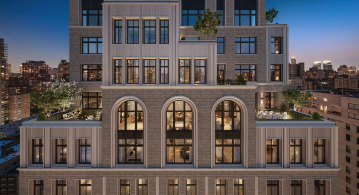
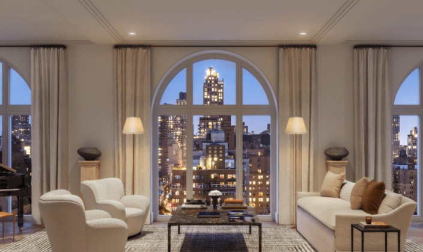
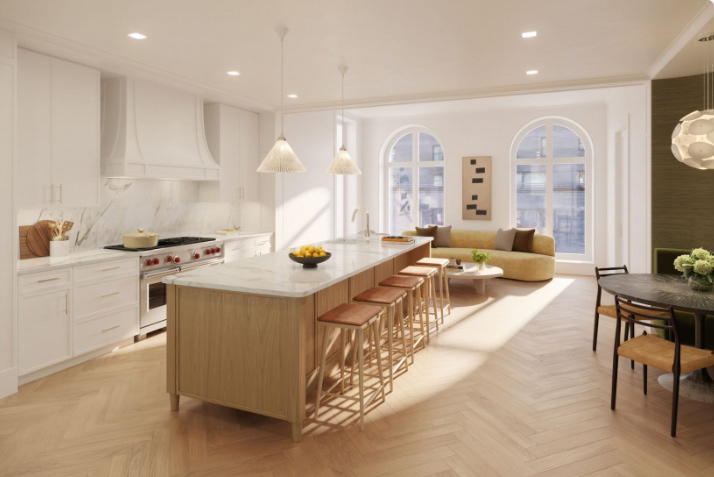
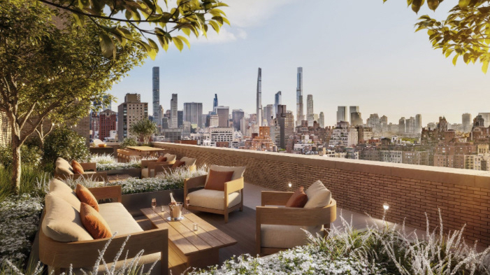

Upper East Side Residences — Contemporary Architecture
2026This project explores the design of a luxury residential building in New York City, where classical architecture meets a contemporary sensibility. The brick façade, punctuated by three tiers of arched windows, draws on New York’s historic architectural language while introducing fluted detailing and a distinctly modern vertical composition.
Inside, the living spaces are shaped by natural light and generous ceiling heights. The main living room, framed by soaring arched windows, opens onto a sweeping view of the city skyline — a constant dialogue between refined interiors and the pulse of the city beyond. The kitchen, open and light-filled, pairs pale oak, veined marble, and organic furniture pieces for a warm, timeless atmosphere.
The rooftop terrace extends the apartment outward, conceived as a suspended living room above Manhattan — dense greenery set against an open view of the city’s iconic towers.
Together, these spaces bring architectural prestige, residential comfort, and an aesthetic where New York’s heritage meets a contemporary vocabulary.



